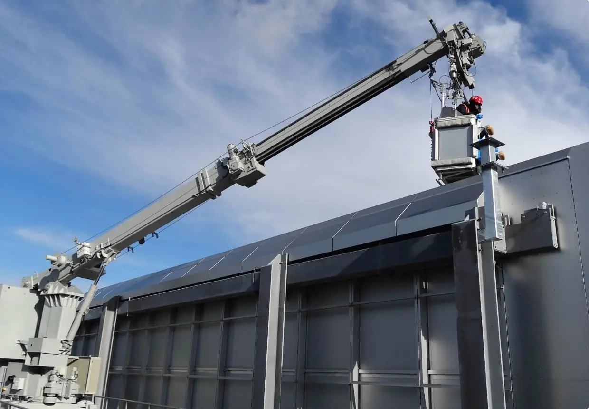

Фасадный подъемник
Оптимальная система обслуживания объектов с плоской крышей. Представляет собой компактную крановую установку, которая перемещается по двойным рельсовым путям или бетонной колее.

Монтаж фасадного подъемника в 6 шагах
1
Подготовка к установке
Проверяется комплектность и визуально оценивается состояние деталей. Затем необходимо поднять на уровень будущего размещения подвесного механизма – крепеж, кабель, контргрузы, тросы, а также элементы консоли.
2
Монтаж консоли
В комплект поставки входит консоль, обеспечивающая вылет люльки на необходимое расстояние от стены здания. Сборка консоли производится на крыше здания. Поэтому так важно заранее поднять все необходимые элементы.
3
Монтаж подвесной платформы
В отличие от консоли, подвесная платформа собирается внизу. Поэтому в подготовительном этапе детали рабочей люльки не требуется поднимать на крышу вместе с элементами консоли.
4
Установка важных элементов
На монтажной раме монтируются подъемники (крепятся болтами, гайками и т.д.). В центре парапета подвесной платформы устанавливается шкаф электроуправления. На кронштейне рамы подъемника устанавливается предохранительная блокировка.
5
Регулировка и проверка
Монтажная бригада должна проверить прочность креплений и корректность установки элементов управления. При выявлении каких-либо нарушений в работе системы проводится регулировка.
6
Пробный запуск
Проверяется устойчивость консоли, работа тормозной системы и эффективность ловителей (на случай аварийной остановки). Испытания проводятся как при максимальной, так и при нулевой нагрузке.
Система с направляющими на крыше здания
| Ширина колеи | 1000 – 3000 мм |
| Максимальный вылет стрелы | до 40 м |
| Рабочая высота | до 500 м |
| Контроль двигателя | 5000 кг – 42000 кг |
| Общий вес | 250 кг * |
* - увеличение грузоподъемности по запросу
Система с направляющими на парапете
| Ширина колеи | 600 – 1200 мм |
| Максимальный вылет стрелы | до 4 м |
| Рабочая высота | до 150 м |
| Контроль двигателя | 3200 кг – 6000 кг |
| Общий вес | 250 кг * |
* - увеличение грузоподъемности по запросу